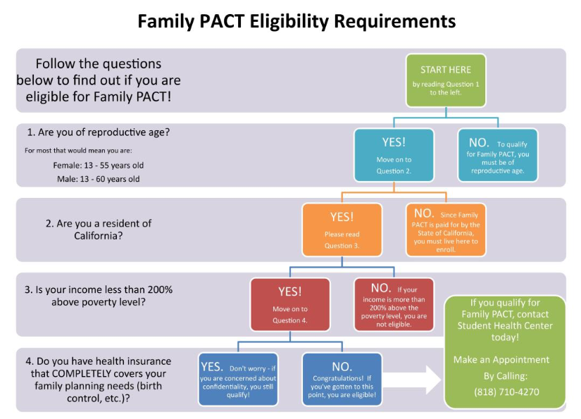

Healthcare is something that students are sometimes scared of because it is usually expensive in our country, thankfully there are laws that give low income students and families affordable healthcare. A California program for affordable healthcare is FamilyPact. FamilyPact gives no-cost family planning services to low-income teens, men, and women. “The Affordable Healthcare Act” was signed into law on March 23rd 2010 that changes the insurance system and protects consumers more. They passed it to keep the insurance marketplace stable and to enforce the law fairly. It also makes it that insurers cannot deny you coverage because of an existing health condition.
In order to be eligible for Familypact assistance applicants must be low-income, California residents and they should not have insurance that covers family planning.
Applying for FamilyPact is easy, you can find it on the FamilyPact website, find providers on the top right and it will lead you to select services in the network. They will provide you with the Client Eligibility Certification Form and if you are eligible you can fill it out and be accepted as a client on the same day. Once accepted you will get healthcare services over a year and then each visit the provider will ask if any of your information has changed to make sure you are still covered by FamilyPact.